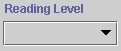
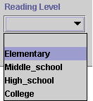

An instance with a Symbol/Single slot shows a drop-down list:

To set the value of the slot, click on the list and double-click to select your choice.

To change the value of the slot, make a different choice from the list. To clear the slot, select the blank value at the top of the list.
An instance with a Symbol/Multiple slot displays multiple values.